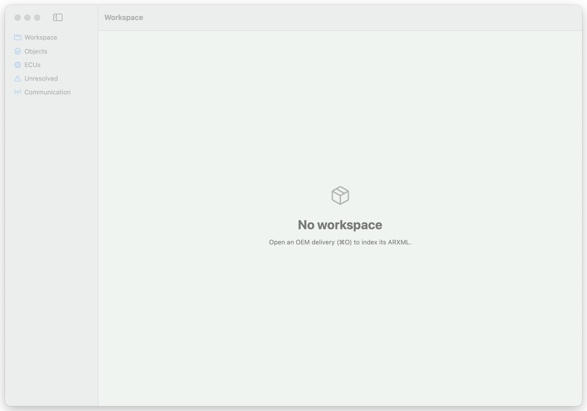

Autarx 是一个 AUTOSAR 集成工作台：直接打开 OEM 交付物——System Description、System Extract、ECU Extract、ECUC 与通信 ARXML——让集成工程师在进入 vendor 工具链之前，先完成检查、检索、引用追踪与结构校验。
System Description、System Extract、ECU Extract、ECUC 与通信 ARXML——流式解析器直接读多文件交付包，无需 vendor 配置器。
每个 SHORT-NAME 都是可索引对象，带来源文件信息与跨文件引用图（*-REF / *-TREF）。
一条 inspect 命令回答「这次 OEM 给了什么」：包清单、ECU 列表、网络与集群清单、SWC 与通信计数。
定位任意 signal、PDU、SWC 或 ECU 元素，跨文件追踪其引用——断链引用会被报告，不会被藏起来。
按路径身份对比两版交付——参数变化以 DEFINITION-REF 表述，绝非行号。影响分析把每个变化归类为「与本 ECU 相关/无关」，并给出可进 CI 的 breaking 发现。
从引用图推导 Cluster → Frame → PDU → Signal 链路，并报告未挂接的孤儿对象——只陈述结构，不虚构收发方向。
校验中继给 DaVinci/tresos/ISOLAR 并归一化诊断。编辑遵循 plan → 语义 diff → apply → undo：diff 未审阅前不落盘。
autarx mcp 通过 Model Context Protocol 暴露完整工具 API。不存在裸写工具——agent 无法绕过审阅边界，每次调用都进审计日志。
同一套工作流可从 CLI/CI 运行，输出稳定 JSON——为自动化与 AI agent 准备。
Autarx 不替代 DaVinci Configurator、EB tresos 或 ETAS ISOLAR。它补上的是收到 OEM 交付到打开 vendor 工具链之间的工程缺口——vendor 侧的校验与代码生成仍是权威路径。
| 桌面端 | macOS 原生宿主（Swift）+ Racket 语义引擎 |
|---|---|
| 平台 | GUI：macOS 14+（Apple silicon / Intel）· CLI：macOS / Linux / Windows；Windows 与 Linux GUI 开发中 |
| 输入 | ARXML — System Description / System Extract / ECU Extract / ECUC / 通信，多文件交付包 |
| 自动化 | CLI 稳定 JSON 输出（CI / AI agent 友好）+ MCP 服务器 |
| 许可 | 源码可见，专有许可（source-available, proprietary） |
| 里程碑 | 分析栈已交付：语义引擎、语义 diff、ECU 影响分析、通信投影、厂商交接、受控编辑、MCP；M9 商业化加固进行中 |

macOS 工作台真实截图：空态。⌘O 打开 OEM 交付包，开始索引。
GUI 与 CLI 同一个引擎：macOS 以 dmg 交付，Windows 以 MSI 交付，Linux 以 deb / rpm / AppImage 交付；CLI 另有全平台自包含 zip。
当前状态：完整分析栈已交付——工作区语义引擎、语义 diff、ECU 影响分析、通信投影、厂商交接、受控编辑与 MCP agent 接口；三平台 GUI 宿主（macOS / Windows / Linux）已上线。剩余为 M9 商业化加固——授权、性能画像与代码签名 / 公证。